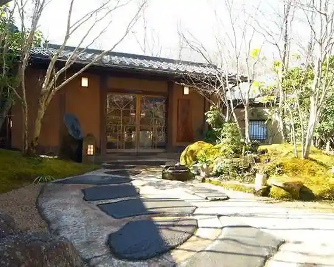
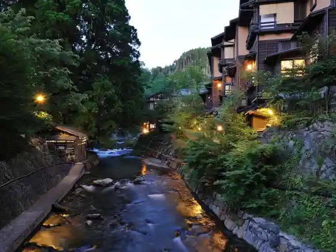
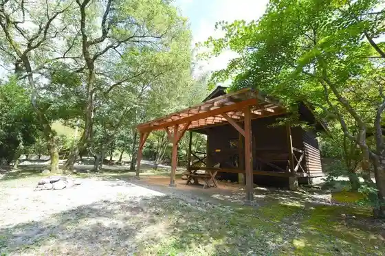
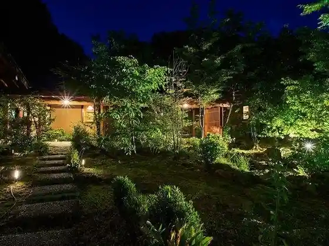

O Yado no no Hana
Minamioguni, Kumamoto · 0967-44-0595 · Official / source link

Kurokawa Onsen
Minamioguni, Kumamoto · 0967-44-0076 · Official / source link

Yamadori no Mori Oto Campground
Minamioguni, Kumamoto · 0967-44-0997 · Official / source link

Mangan Tera Onsen
Minamioguni, Kumamoto · 0967-42-1444 · Official / source link
Hanare Yado Yamazaki
Minamioguni, Kumamoto · 0967-44-0945 · Official / source link

Sato Baths Yawara Ku
Minamioguni, Kumamoto · 0967-44-0690 · Official / source link
Yuyu Higurashi
Minamioguni, Kumamoto · 0967-44-1938 · Official / source link
Bakkupakkazu Yama Sakana
Minamioguni, Kumamoto · 0967-42-1718 · Official / source link
Oda Onsen Shiki Village
Minamioguni, Kumamoto · 0967-44-0088 · Official / source link
Genryu no Yado Ho Santei
Minamioguni, Kumamoto · 0967-44-0059 · Official / source link
Yoshihara Gombe Village
Minamioguni, Kumamoto · 0967-44-0275 · Official / source link
Aso Ogi Onsen Ogi So
Minamioguni, Kumamoto · 0967-42-1019 · Official / source link
Ko Baths
Minamioguni, Kumamoto · 0967-48-8700 · Official / source link
O Yado Gen Kawa
Minamioguni, Kumamoto · 0967-44-0651 · Official / source link
Iyashi Village Ki Yashiki
Minamioguni, Kumamoto · 0967-44-0326 · Official / source link
Seijaku Na Mori no Yado Yama Shi no Bu
Minamioguni, Kumamoto · 0967-44-0188 · Official / source link
Soba Tokoro Sota Ro Iori
Minamioguni, Kumamoto · 0967-44-0108 · Official / source link
Yu Kyo no Hibiki Yu Sai
Minamioguni, Kumamoto · 0967-44-0111 · Official / source link
Kurokawa Onsen Muryu Tan / Bekkan Hana Tomari
Minamioguni, Kumamoto · 0967-44-0321 · Official / source link
Fuji Ya
Minamioguni, Kumamoto · 0967-48-8117 · Official / source link
Kurokawa So
Minamioguni, Kumamoto · 0967-44-0211 · Official / source link
Se no Hon Resutohausu
Minamioguni, Kumamoto · 0967-44-0011 · Official / source link
Soba Kaido Waremoko
Minamioguni, Kumamoto · 0967-42-1820 · Official / source link
Hana Sato Iori
Minamioguni, Kumamoto · 0967-42-0193 · Official / source link
Tofu Kichijo
Minamioguni, Kumamoto · 0967-44-0659 · Official / source link
Waroku Ya
Minamioguni, Kumamoto · 0967-44-0283 · Official / source link
Hana to Fu
Minamioguni, Kumamoto · 0967-42-0186 · Official / source link
Noka Resutoran Hachi Na Ie (Yasaiya)
Minamioguni, Kumamoto · 0967-44-0724 · Official / source link
Nature Sho (Jinenjo) Ryori
Minamioguni, Kumamoto · 0967-44-0930 · Official / source link
Minamioguni Sogo Bussan Kan Kiyora Kasa
Minamioguni, Kumamoto · 0967-42-1213 · Official / source link
Tsuji no Chaya
Minamioguni, Kumamoto · 0967-44-0385 · Official / source link
Take Fue
Minamioguni, Kumamoto · 0570-064-559 · Official / source link
Shirakawa Onsen Hana Takumi Iori (Hanashoan)
Minamioguni, Kumamoto · 0967-25-8736 · Official / source link
Hikyo Shichi Taki
Minamioguni, Kumamoto · 0967-42-1111 · Official / source link
Take no Kuma no Oga Yaki
Minamioguni, Kumamoto · 0967-42-1111 · Official / source link
Suzume Jigoku
Minamioguni, Kumamoto · 0967-42-1111 · Official / source link
Yoshihara Iwato Kagura
Minamioguni, Kumamoto · 0967-42-1111 · Official / source link
Chaya no Hara Campground
Minamioguni, Kumamoto · 0967-44-0220 · Official / source link
Se no Hon Campground
Minamioguni, Kumamoto · 0967-44-0011 · Official / source link
Gondosharoreoto Campground
Minamioguni, Kumamoto · 0967-44-0316 · Official / source link
Maze no Kyowakoku Kabuto no Se Famirii Campground
Minamioguni, Kumamoto · 0967-42-1448 · Official / source link
Maze no Gorge
Minamioguni, Kumamoto · 0967-42-1444 · Official / source link
O Toishi no Oka
Minamioguni, Kumamoto · 0967-42-1444 · Official / source link
Kurokawa Onsen Nyuto Tegata
Minamioguni, Kumamoto · 0967-44-0076 · Official / source link
Fufu Taki
Minamioguni, Kumamoto · 0967-42-1444 · Official / source link
San'ai Highlands
Minamioguni, Kumamoto · 0967-42-1444 · Official / source link
Kurokawa Onsen Yu Akari
Minamioguni, Kumamoto · 0967-44-0076 · Official / source link
Seiryu Forest
Minamioguni, Kumamoto · 0967-42-1444 · Official / source link
Ryu Kei Sono
Minamioguni, Kumamoto · 0967-44-0671 · Official / source link
Rekishi no Yado O Kyakuya
Minamioguni, Kumamoto · 0967-44-0454 · Official / source link
Karin
Minamioguni, Kumamoto · 0967-42-1608 · Official / source link
Yama Mizu Ki
Minamioguni, Kumamoto · 0967-44-0336 · Official / source link
O Yado no Shi Yu
Minamioguni, Kumamoto · 0967-44-0308 · Official / source link
Fufu Yu Asobi no Yado Fuji no Ya Hanare Kaze
Minamioguni, Kumamoto · 0993-22-2217 · Official / source link
Kuju Waita Tembo Park
Minamioguni, Kumamoto · 0967-42-0463 · Official / source link
Yama no Ibuki (Yamabukiiro no Jajii Gyunyu Kojo)
Minamioguni, Kumamoto · 0967-44-0930 · Official / source link
Mangan Tera Onsen Kawayu
Minamioguni, Kumamoto · Official / source link
Nihonryori (Sho Takashi)
Minamioguni, Kumamoto · Official / source link
I no Beteibufurenchi (KAZANE)
Minamioguni, Kumamoto · Official / source link